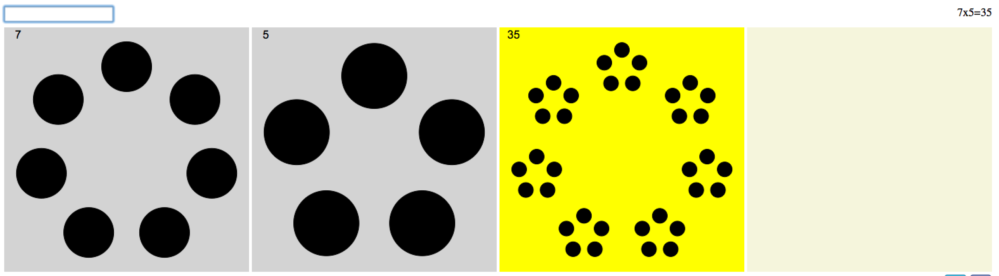
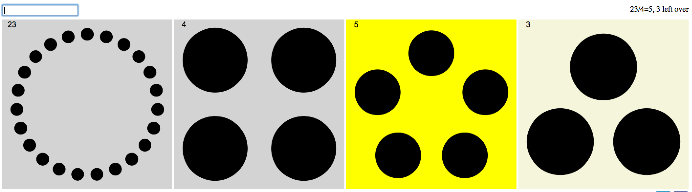

I’ve previously discussed Brent Yorgey’s factor diagrams. As the father of a 6 year old, I’ve found they are a great way to introduce the concepts of primes and factorization.
Since then, I dabbled with the javascript animations by Sean Seefried to create 2 related
products:
1. a calculator, and
2. a factorization game.
Factor Diagram Calculator
The calculator does multiplication and division and allows the young ‘uns to explore the diagrams. I
also recently added the ability to do exponentiation after watching Mike Lawler’s video on powers of 3 and Sierpinski’s
triangle.
Multiplication:

Division:

Calculator is here.
Factorization Game
Kids learn by playing, that is well known. So how to make a game out of all of this? I
scripted up something simple whereby you’d be presented with a large number and have to factor it
while the clock is ticking. Do this a few times, get a score. Then compare with friends collect
badges, etc. That last bit (prizes, badges) is not written and is a whole separate app of course.
Game is here.
So as it now stands it is simple, a germ of an idea really. Any thoughts on how to improve the learning experience? Tweet me at @rwoodley if you have thoughts.
 Factor Dominoes
Factor Dominoes
{kind=link}